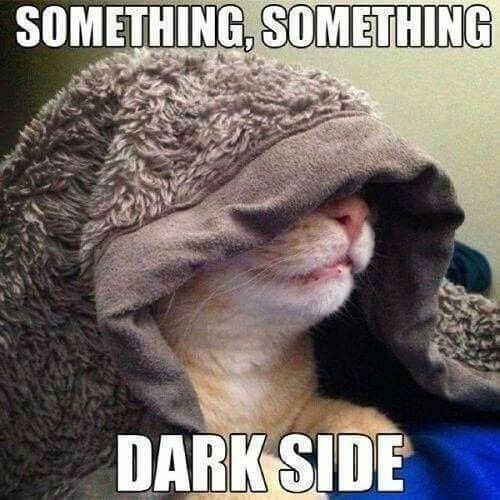
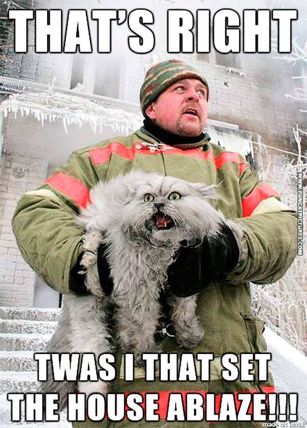
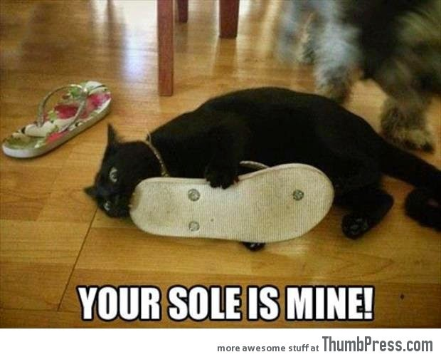
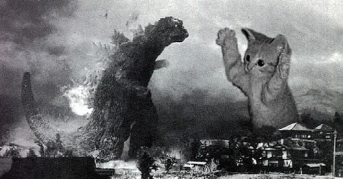

Home | FLARPing
In addition to being mistaken for Ocelots, cats are becoming aware of how they are perceived in some public circles (such as the one the creator of this website runs in). To counteract such a negative view some cats have taken to FLARPing (otherwise known as Feline LARPing, otherwise known as Cats Live Action Role Playing or CLARPing).
"This Khajiit is cold..."
This has had a mixed reception with the general public as everyone knows how comfortable it is to be out numbered by individuals dressed up in costume, speaking strangly, totting weapons (fake or otherwise), and taking action on imaginary things in a (very real) public space.
To help our fellow civilians better accecpt FLARPing as an acceptable pass time, have your cats or fellow cat owners who already participate in FLARPing to consider the following tips.
Not only does this lower the stress of the passive observer, but also allows a larger budget for costumes.
There are certain things that every one can relate to, try to incorporate these things into your FLARPing.
FLARPing is not for everyone. Please do not force your cat into any activities they would otherwise not participate in.
There have been cases of humans forcing their cats into FLARPing. Some cats in these situations have lost touch with reality and get fixated on particular roles that tend to have a rather, let's say, "Evil" alignment... Here are their stories.
   Share what you learn with others, be a part of the FLARPing movement that is taking this country by storm!
The provided images I used to be an adventurer like you..., This is aimed at your knee, Who needs DOS, The Circle of Life!, Help!, The Force is strong with this one!, FLARPing gone wrong, Finish him!, The lesser know 'KeeKeeZilla!, and Your Fired! are not original works and were taken from outside sources